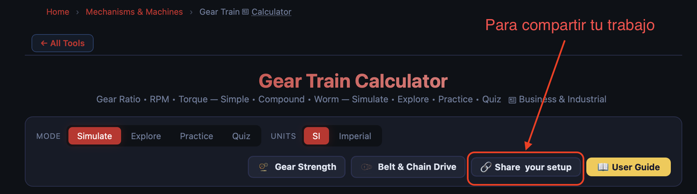
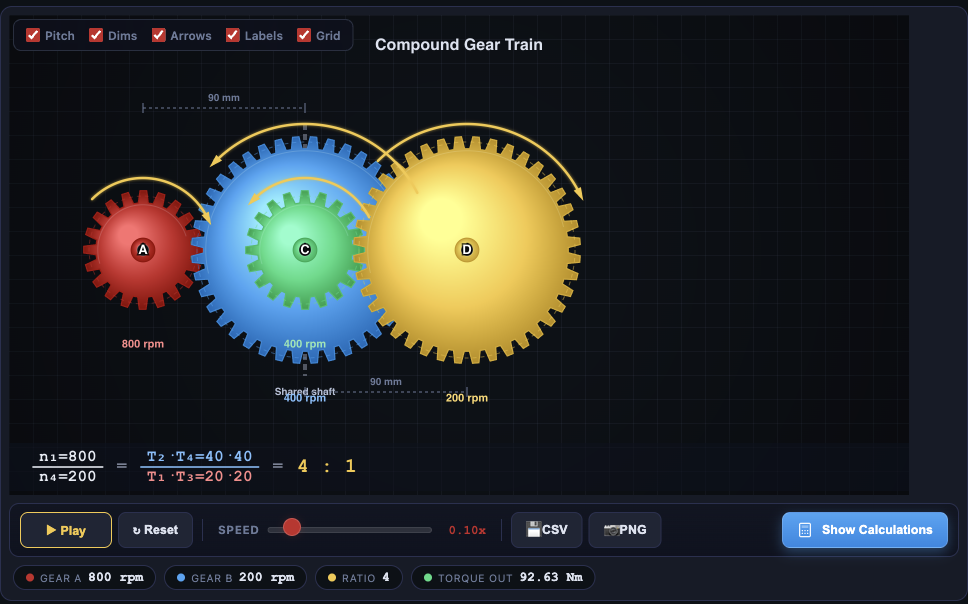
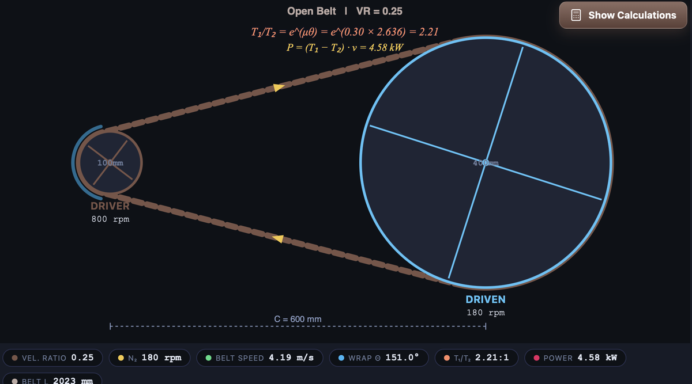

Sesión 10
Hasta ahora te hemos dado los datos y te hemos pedido el resultado. Aquí se invierte: te vas a fijar tú el objetivo y tendrás que diseñar el mecanismo que lo consigue, montarlo en un simulador y comprobar experimentalmente cómo se comporta. Es lo que hace un ingeniero: no resolver un problema que le dan hecho, sino decidir qué piezas lo resuelven.
Esta práctica es individual y forma parte de tu nota de la unidad, tal y como viste en la portada. El diseño y el montaje se hacen en clase, donde puedes preguntar; la memoria la terminas después y la entregas en PDF en Moodle.
Todo lo que vayas obteniendo lo recoges en una plantilla: copia aquí la plantilla de la práctica. Ábrela ahora, antes de empezar, y ve rellenándola sobre la marcha; así no tendrás que reconstruir al final lo que hiciste al principio.
Lo que vas a hacer
| Fase | En qué consiste |
|---|---|
| 1. Tu máquina | Eliges una máquina real y decides qué velocidad necesita a la entrada y a la salida. |
| 2. Con engranajes | Diseñas el tren que consigue esa reducción, lo calculas a mano y lo montas. |
| 3. Con correa | Resuelves lo mismo con poleas y correa. Los dos mecanismos son obligatorios. |
| 4. Experimentas | Pruebas qué pasa cuando la correa desliza y decides cuál de las dos soluciones es mejor para tu máquina. |
La herramienta
Entra en mechsimulator.com. Es gratuita, no hay que registrarse ni instalar nada y funciona en cualquier navegador. Está en inglés y, al abrirla, pide aceptar el uso de cookies: acéptalo (el botón dice Consentir, o Got it en el aviso pequeño de abajo).
Dentro de Mechanisms & Machines usarás dos herramientas, una en cada fase:
| Fase | Herramienta | Lo que puedes ajustar |
|---|---|---|
| 2 · engranajes | Gear Train Calculator | dientes de cada rueda (de 10 a 60), velocidad de entrada (hasta 1200 rpm), módulo y potencia |
| 3 y 4 · correa | Belt & Chain Drive | diámetro de las dos poleas (de 80 a 400 mm), distancia entre ejes, velocidad de entrada y deslizamiento |
En las dos, deja el modo ("MODE") en Simulate, que es el que tiene los controles editables. El botón "Show Calculations" despliega las fórmulas con tus valores sustituidos: sirve para comprobar tu cálculo una vez hecho, no para ahorrártelo.
Las fórmulas que necesitas las tienes en 2.3.1. Ruedas y poleas (con diámetros) y en 2.3.2. Engranajes y cadenas (con número de dientes).
Cómo entregas cada montaje
Cuando tengas un montaje terminado, pulsa "🔗 Share your setup", arriba a la derecha. El botón te responderá un instante con "Link copied!": eso significa que el enlace de tu montaje ya está copiado.
No lo busques en la barra de direcciones del navegador —ahí solo se ve el principio y parece que no ha pasado nada—. Pégalo directamente en tu documento con Ctrl+V y verás que es una dirección larguísima: eso es normal, porque lleva dentro tu mecanismo entero. Al abrirla se recupera con tus números, así que es la prueba de que lo has montado tú.
Necesitas dos enlaces: el de engranajes y el de la correa.

El botón está en la barra de arriba, junto a «User Guide».
Ojo con el "Gear Ratio"
En el Gear Train Calculator, la casilla "GEAR RATIO" no es tu i: ellos la calculan al revés, dividiendo los dientes de la conducida entre los de la motriz. Es decir, lo que muestran es 1/i. Si tu i vale 0,25 y la pantalla dice "GEAR RATIO 4", las dos cosas son correctas y dicen lo mismo. Para no liarte, compara siempre la velocidad de salida ("OUTPUT RPM"), que no cambia de sentido en ningún sitio.
Fase 1. Tu máquina
Elige una máquina real que conozcas y que tenga una transmisión: una bicicleta, un taladro, una batidora, un ventilador, una lavadora, un cortacésped, la cadena de un portón… No vale una inventada.
- Descríbela y di dónde está la transmisión: qué gira primero (el motor o tu pierna) y qué tiene que girar después.
- Decide la velocidad de entrada. Búscala si la máquina la trae escrita, o estímala razonadamente. Tiene que estar entre 50 y 1200 rpm, que es el rango que admiten las dos herramientas.
- Decide la velocidad de salida que necesitas y justifica por qué (por ejemplo: «la broca debe girar más despacio para taladrar metal», «la rueda tiene que girar más rápido que los pedales»).
- Calcula la relación de transmisión que te hace falta: i = velocidad de salida entre velocidad de entrada. Di si tu sistema es reductor o multiplicador.
Fase 2. Resuélvelo con engranajes
Ahora tienes que encontrar los números de dientes que dan esa i. Hay dos reglas que respetar, y las dos son restricciones reales de fabricación, no caprichos:
- Cada rueda debe tener entre 17 y 60 dientes. Por debajo de 17 el diente se debilita al tallarlo (el propio simulador te avisa con un mensaje de undercut).
- El resultado puede quedarse a un 5 % de tu objetivo: con dientes enteros casi nunca sale exacto, y en la industria se trabaja igual.
Puede que con dos ruedas no llegues. Con dientes entre 17 y 60, una sola pareja solo alcanza relaciones entre 0,28 y 3,5. Si tu i queda fuera, necesitas un tren compuesto (opción Compound): dos parejas montadas en un eje común, cuyas relaciones se multiplican. Así llegas de 0,08 a 12,5. Y si ni con esas: dilo en la memoria y explica cuántas etapas harían falta.
Para esta fase entrega:
- Los dientes que has elegido para cada rueda y por qué esos.
- El cálculo a mano de la i que consigues y de la velocidad de salida, con la fórmula y la sustitución escritas.
- El error respecto a tu objetivo, en porcentaje.
- El montaje hecho en el simulador y su enlace.
- Si has necesitado tren compuesto, explica por qué no bastaba con dos ruedas.
Fase 3. Resuelve lo mismo con correa
Misma máquina, misma reducción, mecanismo distinto: ahora con dos poleas y una correa, en Belt & Chain Drive. Cambia lo que manda en la fórmula —ya no son dientes, son diámetros— y cambian los límites: cada polea puede medir entre 80 y 400 mm.
La herramienta monta solo dos poleas. Si tu reducción no cabe en una etapa (con esos diámetros, una etapa da de 0,2 a 5), tendrás que partir el tren en dos etapas y montarlas por separado, multiplicando después sus relaciones. Es exactamente lo que haces al resolver un tren en el papel: separarlo por los ejes compartidos.
Para esta fase entrega:
- Los diámetros elegidos y el cálculo a mano de la i y de la velocidad de salida.
- El montaje y su enlace (los dos, si has necesitado dos etapas).
- Una comparación: ¿te ha costado más o menos llegar al objetivo que con engranajes? ¿Por qué crees que pasa?
Fase 4. Experimenta: qué pasa cuando la correa patina
En el apartado de ruedas y poleas leíste que una correa floja patina sobre la polea. Hasta ahora era una frase; vamos a medir cuánto cuesta. En Belt & Chain Drive tienes un control llamado "Slip" (deslizamiento), que se puede mover del 0 al 10 %.
Con tu montaje de la fase 3, anota la velocidad de salida para cada deslizamiento y completa la tabla:
| Deslizamiento | Velocidad de salida (rpm) | Diferencia con el 0 % |
|---|---|---|
| 0 % | — | |
| 2 % | ||
| 5 % | ||
| 10 % |
Y responde:
- ¿La relación entre velocidades y diámetros sigue cumpliéndose cuando hay deslizamiento? ¿Qué significa eso?
- Un reloj mecánico, ¿podría llevar una transmisión por correa lisa? ¿Y una cinta transportadora de un supermercado? Justifica las dos respuestas con lo que acabas de medir.
- Prueba a cambiar la correa por Chain Drive (cadena). ¿Desliza? ¿Por qué la bicicleta lleva cadena y no una correa lisa?
- Decisión final: para TU máquina, ¿elegirías engranajes o correa? Da al menos dos razones apoyadas en lo que has hecho.
Un ejemplo completo, para que veas el nivel
Un ventilador de techo cuyo motor gira a 800 rpm y cuyas aspas deben girar a unas 200 rpm.
Ver el ejemplo paso a paso
Fase 1. Entrada 800 rpm, salida deseada 200 rpm. La relación necesaria es i = 200/800 = 0,25. Es un sistema reductor: hay que dividir la velocidad entre 4.
Fase 2, con engranajes. Con dos ruedas necesitaría que la conducida tuviera cuatro veces los dientes de la motriz. Con la motriz en el mínimo de 17 dientes, la conducida tendría que llevar 68, y el máximo es 60: no cabe en una etapa. Se resuelve con tren compuesto, dos etapas de 0,5 cada una: 20 y 40 dientes en la primera, 20 y 40 en la segunda. Comprobación: 0,5 · 0,5 = 0,25 exacto, y la salida queda en 800 · 0,25 = 200 rpm. El simulador mostrará "GEAR RATIO 4", que es 1/i.

Así queda el ejemplo montado. Fíjate en el eje intermedio ("Shared shaft"): sus dos ruedas giran a la misma velocidad, 400 rpm, que es lo que permite multiplicar las dos etapas.
Fase 3, con correa. Aquí sí cabe en una sola etapa: polea motriz de 100 mm y conducida de 400 mm dan i = 100/400 = 0,25, y las dos medidas están dentro del rango. Conclusión que merece la pena escribir en la memoria: la correa consigue en una etapa lo que a los engranajes les cuesta dos, porque un diámetro se puede estirar de forma continua mientras que los dientes van de uno en uno y no pueden bajar de 17.
Fase 4, experimentando. Al subir el deslizamiento al 10 %, la salida cae de 200 a unas 180 rpm sin que nadie haya tocado los diámetros. Es decir, la fórmula de los diámetros deja de dar el resultado real: predice 200 y la máquina da 180. Por eso donde la precisión importa se usan engranajes o cadena, y por eso la bicicleta lleva cadena: si patinara, cada pedalada avanzaría una distancia distinta.

La misma reducción de antes, ahora con correa y con un 10 % de deslizamiento: la salida marca 180 rpm en vez de las 200 que predice la fórmula de los diámetros. Esos 20 rpm que faltan son la correa patinando.
Qué tienes que entregar
Un único documento en PDF, hecho con la plantilla de la práctica, que contenga:
- La descripción de tu máquina y las velocidades, justificadas.
- Los dos diseños, cada uno con sus cálculos a mano escritos (fórmula, sustitución y resultado) y su error respecto al objetivo.
- Los enlaces de los montajes.
- La tabla del experimento de deslizamiento, rellena.
- Las respuestas y tu decisión final razonada.
El cálculo se hace antes de montar. Se nota mucho cuando se ha hecho al revés: los números salen redondos porque están copiados de la pantalla, y no hay ni error ni justificación de por qué se eligió cada rueda. Lo que se valora es el criterio con el que decides, no que el resultado cuadre.
Si quieres ir más allá
En geargenerator.com (Gear Generator 2) puedes construir trenes engranaje a engranaje y ver cómo el módulo determina el tamaño real de cada rueda: el programa te muestra el diámetro que le corresponde a cada una, y las ruedas tienen que caber unas con otras. También es gratuita y sin registro (te preguntará si acepta cookies para recordar tus preferencias). Solo las descargas de los planos son de pago, y no las necesitas para nada. No entra en la práctica: es para curiosear.